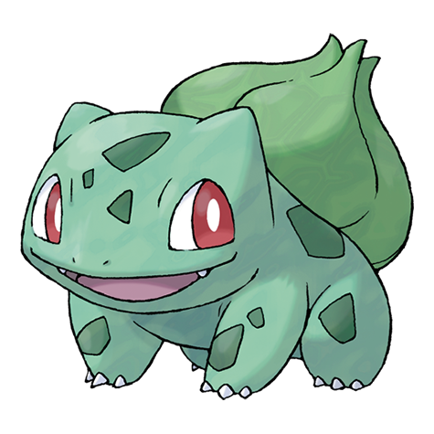
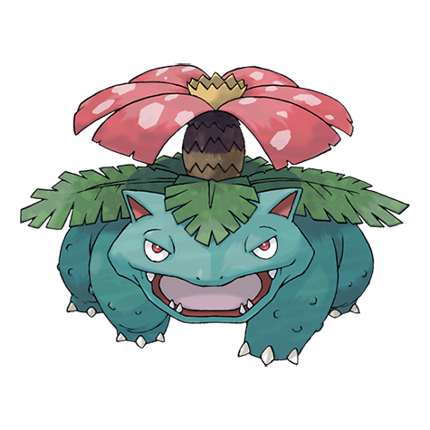

1. Bulbasaur
Tipo: Planta, Veneno
Una extraña semilla fue plantada en su espalda al nacer. La planta brota y crece con este Pokémon.
Habilidades: Espesura, Clorofila
2. Ivysaur

Tipo: Planta, Veneno
Cuando la yema de su lomo crece, parece no poder permanecer en su sitio por mucho tiempo.
Habilidades: Espesura, Clorofila
3. Venusaur
Tipo: Planta, Veneno
La planta florece cuando absorbe energía solar. Esto le obliga a permanecer en movimiento para buscar la luz del sol.
Habilidades: Espesura, Clorofila